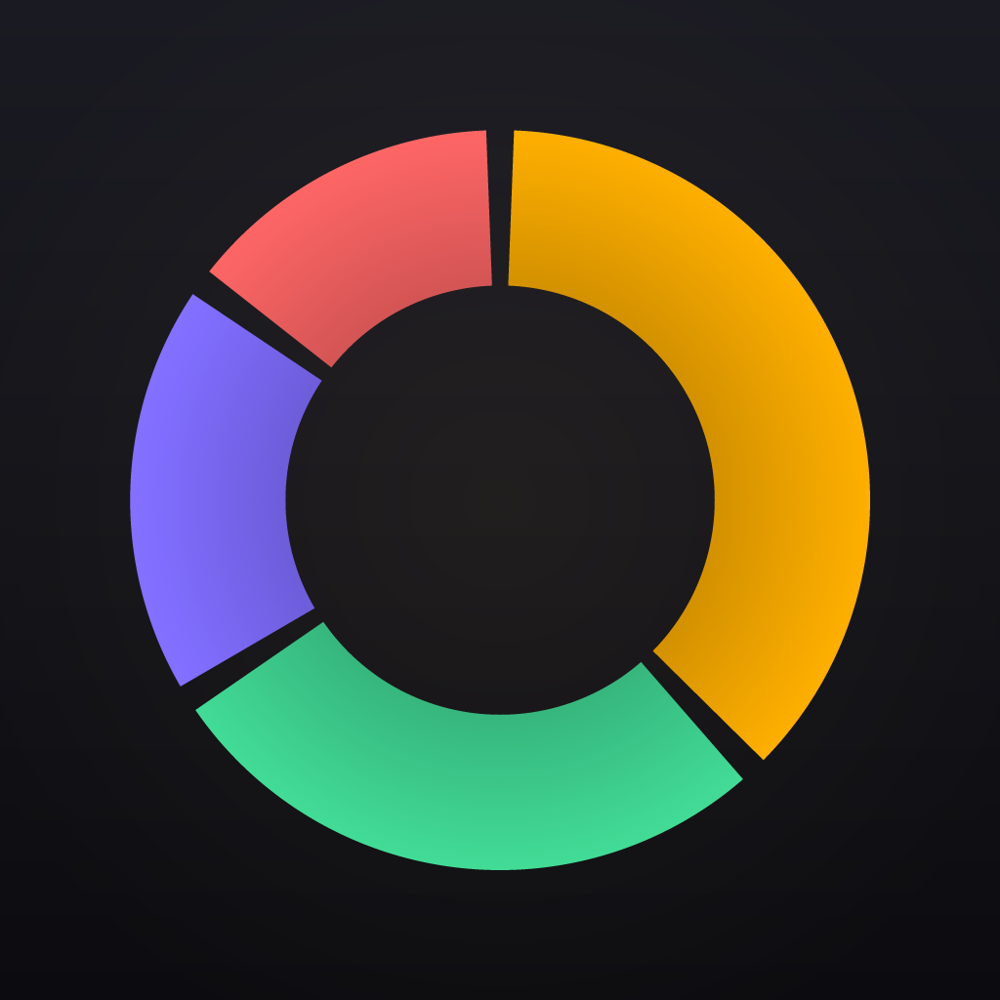

BudgetSplitEverything needed to implement the app: design tokens, components, every screen with its interaction model, and a prioritised feature roadmap. The interactive HTML prototype in the BudgetSplit App tab is the visual source of truth — this document is how you turn it into shipped product.
The HTML files in this handoff are design references — prototypes showing the intended look and behaviour, not production code to copy. Your job is to recreate them in the target environment (React Native / Expo is the assumed stack) using its established patterns, then wire them to the local data layer.
A dark, near-black canvas with a subtle teal tint, layered into surface steps for elevation. One brand accent (teal) carries all primary action; coral is the spark. Full live specimens are in the Design System tab.
Category icons are the one place a wide hue palette appears — each glyph sits in a circle of its own colour at ~13% opacity.
Two families, strict roles: Inter for every word, Space Mono for every money amount. Max three sizes per screen.
Every screen is composed from these. Each is live in the Design System tab with its full prop API and states. Build them once, to spec, then compose.
| Component | Group | Variants / key props |
|---|---|---|
| Button | ui | primary · secondary · ghost · destructive × sm/md/lg · fullWidth · disabled · loading |
| Input | ui | text · amount (mono, right-aligned) · with-icon · prefix · focus / error |
| Switch | ui | on · off · disabled — thumb springs, track fades |
| TabPills | ui | segmented selector — Month / Year, Today / Week |
| SettingsRow | ui | value · chevron · switch · danger |
| Card / Divider | ui | padded · flush list (padded=false) · tappable (onClick) · inset divider |
| EmptyState | ui | icon-circle + title + body + CTA |
| Icon / IconCircle | ui | Feather glyph · tinted circle (size + iconSize) — the core motif |
| AmountText | finance | xl / lg / md / sm · sign-coloured · forceColor · rounded |
| TransactionRow | finance | expense · income · settlement · onClick |
| BudgetBar | finance | green / amber / red · animated fill · height |
| CategoryChip | finance | default · selected |
| Badge | finance | neutral · accent · income · expense · amber · settle · icon |
| MemberAvatar | finance | initials · colour · selected ring · overlap stack |
| FAB | finance | teal→coral gradient + add sheet trigger |
Each screen below reflects the current prototype, including the interactive redesigns. Layout is top-to-bottom; “Hero” is the dominant opening element. Components in code map 1:1 to §04.
These tap-to-reveal interactions are the product’s personality. Implement the behaviour, not just the static frame.
Idle: ring + centre total + “tap a slice”. Tap a wedge → it translates outward ~7px and grows, siblings drop to 0.32 opacity, centre cross-fades to the category’s name + amount + “{pct}% · View →”. Tap centre or wedge again → drill into Category Detail. Chips below mirror the selection. Easing: spring cubic-bezier(0.34,1.56,0.64,1).
Bars sized to value against a dashed budget line; over-budget bars are amber. Tap a bar → lift + glow, siblings dim to 0.3, a detail card fades in with the period total, an over/under Badge, and tappable top-category rows. Re-tap to deselect. Month/Year switch animates bar heights and clears selection.
In Add Expense, choosing a budgeted category reveals a live card: the projected spend vs allocation, a BudgetBar at the new level, and curPct → newPct in health colour. The user sees the consequence of the expense before saving — entry meets analytics.
| Interaction | Motion | Timing / easing |
|---|---|---|
| Card / row press | Spring scale → 0.97 | spring, ~120ms |
| FAB press | Scale → 0.9, spring back | cubic-bezier(0.34,1.56,0.64,1) |
| Wedge / bar select | Translate + grow / lift + glow; siblings dim | 220–260ms ease |
| Detail panel reveal | Fade in | 220–240ms ease |
| Budget bar fill | Width 0 → value on mount | ~650ms ease-out |
| Add sheet / flow | Slide up over scrim | 280–300ms cubic-bezier(0.22,1,0.36,1) |
| Success | Spring checkmark pop | 420ms cubic-bezier(0.34,1.56,0.64,1) |
| Tab switch | Cross-fade | < 200ms |
In-scope extensions of the current model — no backend, no AI. Build tier 1 first: each reuses existing components and removes a real daily friction.
Auto-create transactions on their due date with a “review” nudge. Recurring lines & cadence already modelled. Reuses TransactionRow + Badge.
One “Export” row in Settings → share sheet. Pure local read of the data — no new model. Offline users want portability.
Debt simplification — minimise the number of payments to square a group. Logic only; the “Who paid what” + Settle UI already exist.
Carry unspent budget to next cadence (rollover rules already shown per group); local notification at 80% / 100% utilisation.
Export an encrypted file to the user’s own storage & restore — protects the no-cloud promise against phone changes.
A search field on History over note / category / amount. High everyday utility, small surface.
Tapping a trend period filters the donut to that week — one continuous analytic story across Reports and the dashboard.
Daily allowance from remaining budget ÷ days left, shown on the dashboard hero — turns the budget-impact insight into forward guidance.
From “Who paid what”, a one-tap reminder to whoever owes the group most — closes the settle loop.
On-device SQLite, no backend. Money is always integer paise. The prototype’s data.js mirrors these shapes — use it as the seed contract.